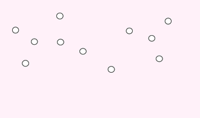
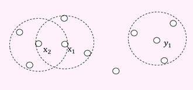
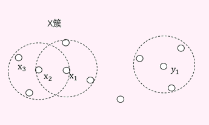
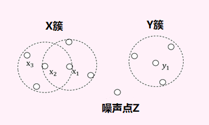

DBSCAN聚类算法
DBSCAN聚类算法（Density-Based Spatial Clustering of Applications with Noise）是最常用的密度聚类代表算法之一。DBSCAN算法通过样本分布的紧密程度来确定聚类结构，从样本密度的角度来考察样本之间的可连接性，并基于可连接样本不断扩展聚类簇来获得最终的聚类结果。
以下是对下图中点的DBSCAN聚类算法过程:
原始点分布
DBSCAN算法首先需要设置两个参数，这两个参数刻画了样本分布的紧密程度：
- 半径R：即下图中的各虚线圆形的半径大小。
- 密度阈值MinPts：示例中取3。
-
确定核心对象。
DBSCAN聚类核心对象
核心对象就是在以某个样本为圆心，作半径为R的圆，圆中的样本个数达到了密度阈值（本例取3）的样本。 图中x1、x2和y1,在以它们为圆心的虚线圆圈中，都存在3个及以上的样本数，所以x1、x2和y1就是核心对象。
-
随机选择一个核心对象，找到由它密度可达的所有样本，构成一个簇。
DBSCAN聚类构建X簇
例如选择核心对象x1。
x1作半径为R的圆圈里的其余样本（如x2，称x2由x1直接密度可达），添加到x1所在的X簇。 x2由x1直接密度可达，同时x2也是核心对象，则由x2直接密度可达的样本（如x3，称x3由x1密度可达），同样的添加到x1所在的X簇。 这就构成了第一个簇。 -
在剩下未成簇的样本中，继续随机选一个核心对象，找到它密度可达的所有样本构成下一个簇（如y1为核心对象构成的Y簇）。如此反复，直到所有核心对象都成簇。
 BSCAN聚类构建Y簇
BSCAN聚类构建Y簇 - 剩下不属于任何簇的样本被认为是噪声点或者异常点，如z点。DBSCAN聚类完成。 
DBSCAN聚类确定噪声点
以上就是DBSCAN聚类的算法流程，在上图中聚类成了2个簇（X簇和Y簇）和1个噪声点。